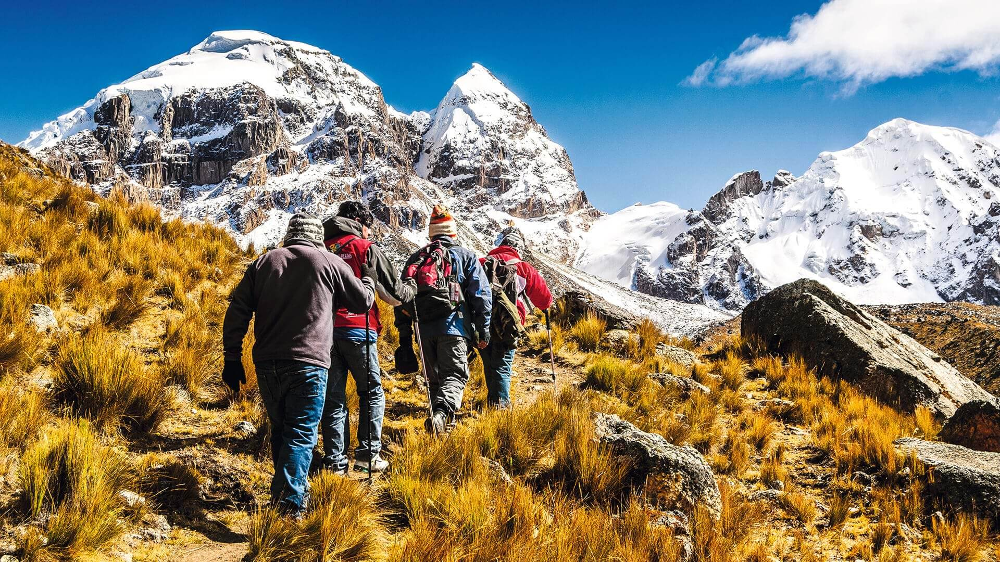

curriculum Vitae
Felipe Eduardo Guzmán Vega
Datos generales
Fecha de nacimiento: 23/12/1998
Cedula: 20.003.705-7
Nacionalidad: Chilena
EMAIL: Felipeguzmanvega5@gmail.com
Direccion: Diputada Laura Rodriguez #7202
Telefono: +56928242610
Edad: 25 Años
Descripcion Profesional
Mi descripcion profesional es utilizar mis habilidades organizativas y mi atención al detalle para optimizar los procesos e ir contribuyendo a la empresa y también seguir mejorando mis tanto conocimientos como en el manejo de equipos de sistemas, con el objetivo de poder implementar prácticas innovadoras que impulsan. la productividad, así mismo, buscar oportunidades de crecimiento profesional dentro de la empresa, ya sea a través de la asunción de responsabilidades adicionales o participación en proyectos de mejora continua.
Estudios academicos
Escolarida Basica: colegio Tobalaba
inicio: MAR 2000 - Termino: DIC 2008
Escolaridad Media: liceo Jovina naranjo
inicio: MAR 2008 - Termino: DIC 2012
superior: instituto INACAP
Actualmente: FRB 2023
experiencia previa
Soldado De Tropa Ejercito de chile
inicio: 2017 - Termino: 2022
bodeguero tienda Ripley
inicio: OCT 2023 - Termino: FBR 2024
Anfitrion Clinica UC CHISTUS
inicio: FRB 2024 - Termino: MAR 2024
Mis hobbies
practicar BJJ BRASILEÑO
ir al GYM
hacer TREKKING
